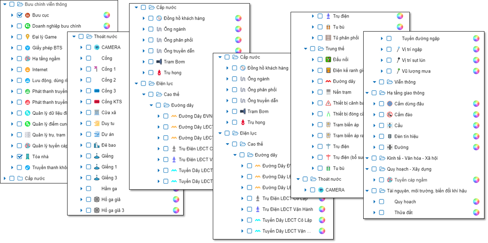
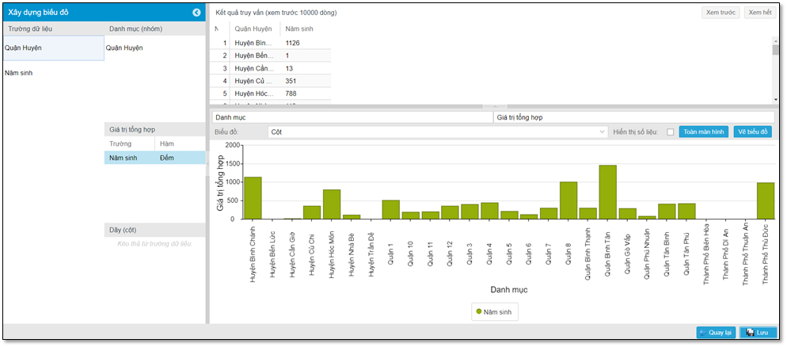
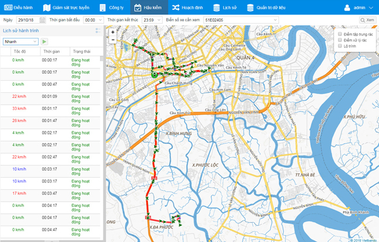
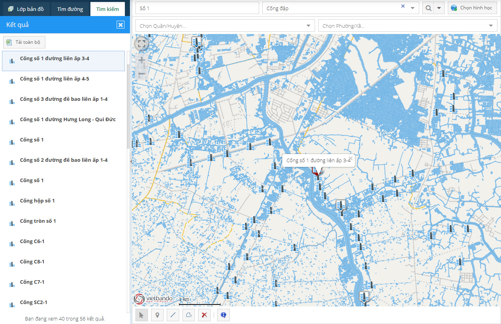
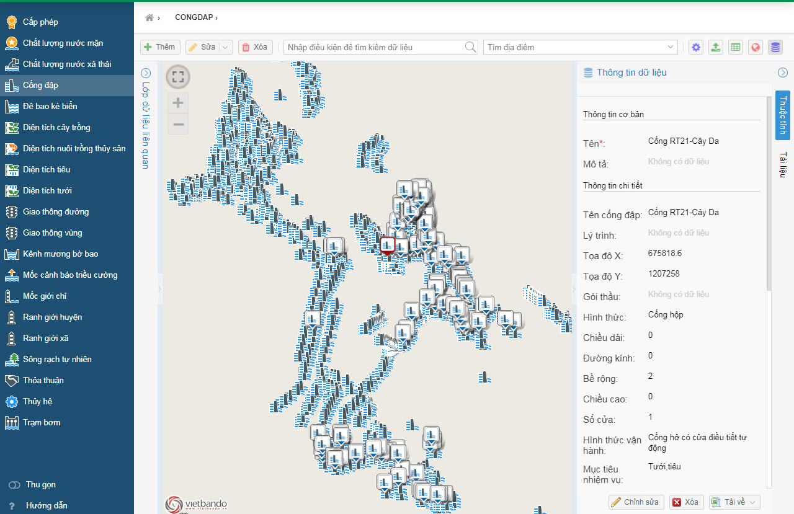

Quản lý tài sản trên nền Hệ Thống Thông Tin Địa Lý (GIS) là một giải pháp hiệu quả giúp các tổ chức, doanh nghiệp theo dõi, quản lý và tối ưu hóa tài sản của mình.
Quản lý cơ sở hạ tầng
Hạ tầng giao thông: quản lý các thông tin về đường bộ, cầu cống, đường sắt, và các cơ sở hạ tầng giao thông khác.
Hạ tầng điện, nước: theo dõi vị trí và tình trạng của các đường dây điện, ống dẫn nước, trạm bơm, và các cơ sở hạ tầng liên quan.

Quản lý tài sản bất động sản
Quản lý đất đai: ghi nhận và quản lý thông tin về quyền sử dụng đất, ranh giới, quy hoạch sử dụng đất.
Quản lý tài sản xây dựng: theo dõi các tòa nhà, công trình, nhà xưởng, văn phòng, bao gồm các thông tin về tuổi thọ, tình trạng và giá trị.

Quản lý tài sản di động
Phương tiện vận tải: giám sát vị trí, lịch trình và tình trạng bảo dưỡng của xe cộ, tàu thuyền, máy bay.
Thiết bị di động: theo dõi và quản lý các thiết bị di động có cài đặt ứng dụng chuyên biệt, bao gồm thông tin về vị trí và tình trạng hoạt động.

Quản lý tài sản công cộng
Công viên và không gian xanh: quản lý các thông tin về cây xanh, khu vực vui chơi giải trí, hạ tầng công cộng.
Hệ thống chiếu sáng và cấp thoát nước: theo dõi tình trạng hoạt động của đèn đường, hệ thống cấp nước, thoát nước.

Phân tích và lập kế hoạch
Phân tích không gian: sử dụng các công cụ phân tích để xác định xu hướng, mô hình, và các vấn đề tiềm ẩn liên quan đến tài sản.
Lập kế hoạch bảo trì và đầu tư: dự báo nhu cầu bảo trì, lập kế hoạch đầu tư và phát triển tài sản.

Tích hợp với các hệ thống khác
ERP và hệ thống quản lý tài chính: kết nối với các hệ thống quản lý tài chính và ERP để đồng bộ hóa thông tin về tài sản và tài chính.
Hệ thống SCADA: tích hợp với các hệ thống điều khiển giám sát và thu thập dữ liệu để quản lý tình trạng hoạt động của các thiết bị và cơ sở hạ tầng.
Cung cấp thông tin thời gian thực
Giám sát thời gian thực: sử dụng các cảm biến IoT và thiết bị GPS để cung cấp thông tin thời gian thực về vị trí và trạng thái của tài sản.
Cảnh báo và báo cáo: hệ thống cảnh báo tự động và báo cáo khi có sự cố hoặc khi tài sản cần bảo trì.